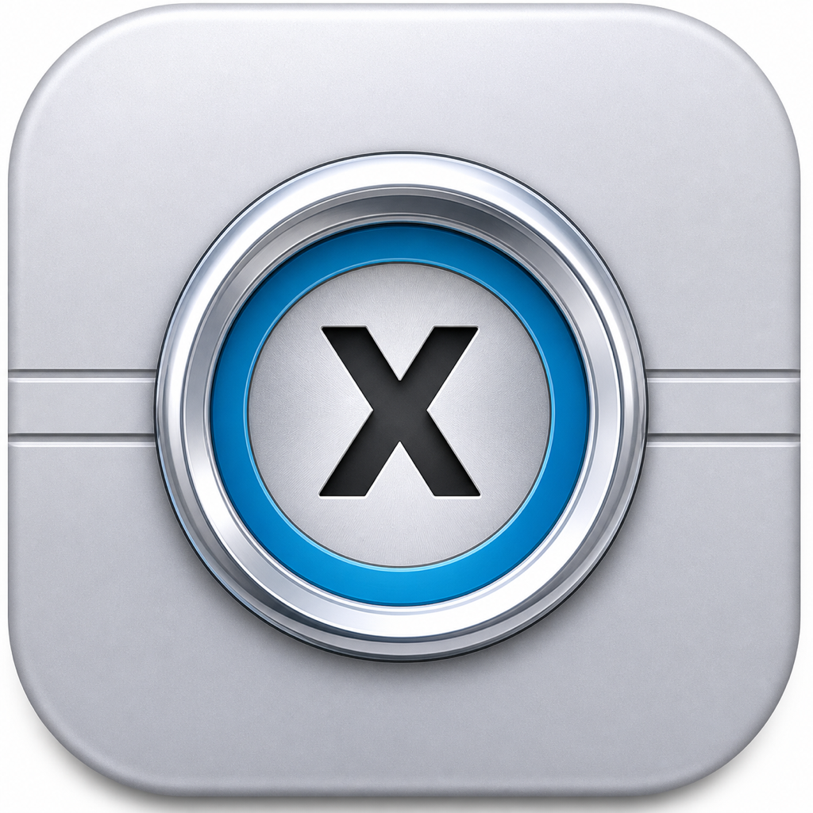

initlife journal
关于产品、隐私，
以及长期主义。
记录产品背后的选择、开发过程中的思考，以及我们如何把复杂问题做得更简单。

为什么 SecretBankX 坚持本地优先
密码与重要资料不应该先离开你的设备，再被承诺“我们会保护它”。从数据边界出发，谈谈 SecretBankX 的设计选择。
阅读全文 →下一篇正在准备中。
我们会继续分享产品设计、跨设备体验与独立开发过程。
initlife journal
记录产品背后的选择、开发过程中的思考，以及我们如何把复杂问题做得更简单。

密码与重要资料不应该先离开你的设备，再被承诺“我们会保护它”。从数据边界出发，谈谈 SecretBankX 的设计选择。
阅读全文 →我们会继续分享产品设计、跨设备体验与独立开发过程。